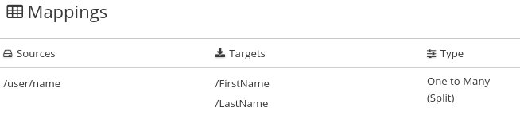
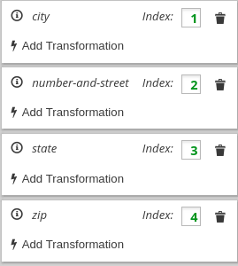
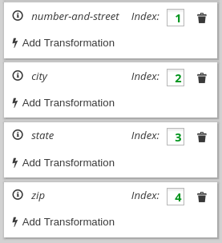
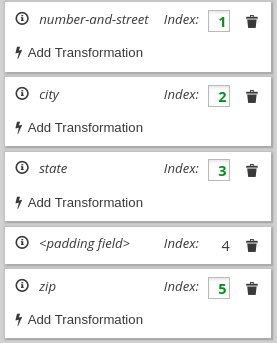
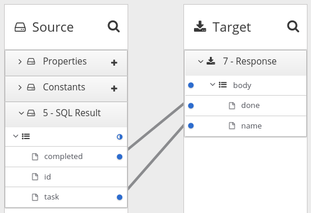

Mapping integration data to fields for the next connection
In most flows, you need to map data fields that have already been obtained or processed to data fields that the next connection in the flow can process. {prodname} provides a data mapper to help you do this. In a flow, at each point where you need to map data fields, add a data mapper step.
| The data mapper displays the largest possible set of source fields that can be provided by the previous integration step. However, not all connections provide data in each displayed source field. For example, a change to a third-party application might discontinue providing data in a particular field. As you create an integration, if you notice that data mapping is not behaving as you expect, ensure that a source field that you want to map contains the data that you expect. |
Details for mapping data fields are in the following topics:
Identifying where data mapping is needed
{prodname} displays warning icons to indicate where a flow requires data mapping.
-
You are creating or editing a flow.
-
The flow contains all connections that it requires.
-
In the flow visualization, look for any
 icons.
icons. -
Click the icon to see the Data Type Mismatch notification.
-
In the message, click Add a data mapping step, which displays the data mapper.
Finding the data field that you want to map
In a flow with relatively few steps, mapping data fields is easy and intuitive. In more complex flows or in flows that handle large sets of data fields, mapping from source to target is easier when you have some background about how to use the data mapper.
The data mapper displays two columns of data fields:
-
Sources is a list of the data fields that are obtained or processed in all previous steps in the flow.
-
Target is a list of the data fields that the next connection in the flow expects and can process.
To quickly find the data field that you want to map, you can do any of the following:
-
Search for it.
The Sources panel and the Target panel each have a search field at the top. If the search field is not visible, click
 at the top
right of the Sources or Target panel.
at the top
right of the Sources or Target panel. -
Enter the names of the fields that you want to map.
To do this, in the upper right of the Configure Mapper page, click the plus sign to display the Mapping Details panel. In the Sources section, enter the name of the source field. In the Target section, enter the name of the field that you want to map to.
-
Expand and collapse folders to limit the visible fields.
To view the data fields available in a particular step, expand the folder for that step.
As you add steps to a flow, {prodname} numbers and renumbers them to indicate the order in which {prodname} processes the steps. When you are adding a data mapper step, the step numbers appear in the folder labels in the Sources panel and in the Target panel.
The folder label also displays the name of the data type that is output by that step. Connections to applications such as Twitter, Salesforce, and SQL define their own data types. For connecting to applications such as Amazon S3, AMQ, AMQP, Dropbox, and FTP/SFTP, you define the connection’s input and/or output type when you add the connection to a flow and select the action that the connection performs. When you specify the data type, you also give the type a name. The type name you specify appears as the name of a folder in the data mapper. If you specified a description when you declared the data type, then the type description appears when you hover over the step folder in the mapper.
Mapping one source field to one target field
The default mapping behavior maps one source field to one target field.
For example, map the Name field to the CustomerName field.
-
In the Sources panel, click the data field that you want to map from.
You might need to expand a step to see the data fields that it provides.
When there are many source fields, you can search for the field of interest by clicking the
and entering
the name of the data field in the search field. -
In the Target panel, click the data field that you want to map to.
The data mapper displays a line that connects the two fields that you just selected.
-
Optionally, preview the data mapping result. This is useful when you add a transformation to the mapping or when the mapping requires a type conversion.
-
In the upper right of the data mapper, click
 and select
Show Mapping Preview to display a text input field on the source
field and a read-only result field on the target field.
and select
Show Mapping Preview to display a text input field on the source
field and a read-only result field on the target field. -
In the source field’s data input field, enter text.
-
Click somewhere outside this text box to display the mapping result in the read-only field on the target field.
-
Optionally, to see the result of a transformation, add a transformation in the Mapping Details panel.
-
Hide the preview fields by clicking
again and selecting
Show Mapping Preview.
-
-
Optionally, to confirm that the mapping is defined, in the upper right, click
 to display the defined mappings.
to display the defined mappings.You can also preview data mapping results in this view. If preview fields are not visible, click
and select
Show Mapping Preview. Enter data as described in the previous step.
In the table of defined mappings, preview fields
appear for only the selected mapping. To see preview fields for another
mapping, select it.Click
again to display the data field
panels. -
In the upper right, click Done to add the data mapper step to the integration.
Here is another way to map a single source field to a single target field:
-
In the Configure Mapper page, in the upper right, click the plus sign to display the Mapping Details panel.
-
In the Sources section, enter the name of the source field.
-
In the Action section, accept the default Map action.
-
In the Target section, enter the name of the field that you want to map to and click Enter.
The data mapper displays the largest possible set of source fields that can be provided by the previous integration step. However, not all connections provide data in each displayed source field. For example, a change to a third-party application might discontinue providing data in a particular field. As you create an integration, if you notice that data mapping is not behaving as you expect, ensure that a source field that you want to map contains the data that you expect.
Example of missing or unwanted data when combining or separating fields
In a data mapping, you might need to identify missing or unwanted data when a source or
target field contains compound data. For example, consider a
long_address field that has this format:
number street apartment city state zip zip+4 country
Suppose that you want to separate the long_address field into discrete
fields for number, street, city, state, and zip. To do this,
you select long_address as the source field and then select
the target fields. You then add padding fields at the locations for the
parts of the source field that you do not want. In this example, the
unwanted parts are apartment, zip+4, and country.
To identify the unwanted parts, you need to know the order
of the parts. The order indicates an index for
each part of the content in the compound field. For example, the long_address
field has 8 ordered parts. Starting at 1, the index of each part is:
1 |
number |
2 |
street |
3 |
apartment |
4 |
city |
5 |
state |
6 |
zip |
7 |
zip+4 |
8 |
country |
In the data mapper, to identify apartment, zip+4, and country as missing, you add padding fields at indexes 3, 7, and 8. See Combining multiple source fields into one target field.
Now suppose that you want to combine source fields for
number, street, city, state, and zip into a long_address
target field. Further suppose that there are no source fields to provide content for
apartment, zip+4, and country. In the data mapper, you need to
identify these fields as missing. Again, you add padding fields
at indexes 3, 7, and 8. See
Separating one source field into multiple target fields.
Combining multiple source fields into one target field
In a data mapper step, you can combine multiple source fields into one
compound target field. For example, you can map the FirstName and LastName
fields to the CustomerName field.
For the target field, you must know what type of content is in each part of this compound field, the order and index of each part of the content, and the separator between parts, such as a space or comma. See Example of missing or unwanted data.
-
In the Target panel, click the field into which you want to map more than one source field.
-
In the Sources panel, if there is a field that contains the fields that you want to map to the target field, then click that container field to map all contained fields to the target field.
To individually select each source field, click the first field that you want to combine into the target field. For each of the other fields that you want to combine into the target field, hover over that field, and press CTRL-Mouse1 (CMD-Mouse1 on MacOS).
When you are done you should see a line from each of the source fields to the target field.
In the Mapping Details panel, under Sources, the data mapper displays the default multiplicity transformation, which is Concatenate. This indicates that execution of the mapping applies the Concatenate transformation to the values in the selected source fields and maps the concatenated value to the selected target field.
For information about other transformations that you can apply to multiple source values see About transformations on multiple source values Also under Sources, there is an entry for each source field that you selected.
-
In the Mapping Details panel, configure the mapping as follows:
-
Under Sources, in the Delimiter field, accept or select the character that the data mapper inserts in the target field between the content from different source fields. The default is a space.
-
Optional. In each source field entry, you can click Add Transformation to apply a transformation to the source field value before it gets mapped to the target field.
-
Under Sources, check the order of the entries for the source fields that you selected. The entries must be in the same order as the corresponding content in the compound target field.
If the entries are not in the correct order, drag and drop source field entries to achieve the same order. The data mapper automatically updates the index numbers to reflect the new order.
If you mapped a source field to each part of the compound target field, skip the next step.
-
For each source field entry that does not already have the same index as the corresponding data in the target field, edit the index to be the same. Each source field entry must have the same index as the corresponding data in the target field. The data mapper automatically adds padding fields as needed to indicate missing data.
If you accidentally create too many padding fields, click the trash-can icon on each extra padding field to delete it.
-
Optional. Under Targets, click Add Transformation to map the content into the target field and then apply a transformation.
-
-
Optionally, preview the data mapping result:
-
In the upper right of the data mapper, click
and select
Show Mapping Preview to display a text input field on each source
field for the currently selected mapping and a read-only result field
on the target field of the currently selected mapping. -
In the source data input fields, enter text. Click outside the text box to display the mapping result in the read-only field on the target field.
If you reorder the source fields or add a transformation to the mapping then the result field on the target field reflects this. If the data mapper detects any errors, it displays informative messages at the top of the Mapping Details panel.
-
Hide the preview fields by clicking
again and selecting
Show Mapping Preview.If you redisplay the preview fields, any data that you entered in them is still there and it remains there until you exit the data mapper.
-
-
To confirm that the mapping is correctly defined, in the upper right, click
to display the mappings defined in
this step. A mapping that combines the values of more than one source field
into one target field looks like this:
 .
.You can also preview mapping results in this view. Click
, select
Show Mapping Preview, and enter text as described in the previous step.
Preview fields appear for only the selected mapping. Click another
mapping in the table to view preview fields for it.
Example of adding padding fields: Separating one source field into multiple target field.
Although that example is for a one-to-many mapping, the principles are the same.
Separating one source field into multiple target fields
In a data mapper step, you can separate a compound source field into multiple
target fields. For example, map the Name field to the FirstName and
LastName fields.
For the source field, you must know what type of content is in each part of this compound field, the order and index of each part of the content, and the separator between parts, such as a space or comma. See Example of missing or unwanted data.
-
In the Sources panel, click the field whose content you want to separate.
-
In the Target panel, click the first field that you want to separate the source field data into.
-
In the Target panel, for each additional target field that you want to contain some of the data from the source field, hover over the field and press CTRL-Mouse1 (CMD-Mouse1 on MacOS) to select it.
When you are done selecting target fields, you should see lines from the source field to each of the target fields that you selected.
In the Mapping Details panel:
-
Under Sources, the data mapper displays Split to indicate that execution of the mapping splits the source field value and maps it to multiple target fields.
-
Under Targets, there is an entry for each target field that you selected.
-
-
In the Mapping Details panel, configure the mapping as follows:
-
Under Sources, in the Delimiter field, accept or select the character in the source field that indicates where to separate the source field values. The default is a space.
-
Optional. Click Add Transformation to apply a transformation to the source field value before it gets mapped to the target field.
-
Under Targets, check the order of the entries for the target fields that you selected. The entries must be in the same order as the corresponding content in the compound source field. It does not matter whether you did not specify a target field for one or more parts of the content in the source field.
If the entries are not in the correct order, drag and drop target field entries to achieve the same order. The data mapper automatically updates the index numbers to reflect the new order.
If you mapped each part of the compound source field to a target field, then skip to the next step.
-
If the source field contains data that you do not need, then in the Mapping Details panel, edit the index of each target field that does not already have the same index as the corresponding data in the source field. Each target field entry must have the same index that the corresponding data has in the source field. The data mapper automatically adds padding fields as needed to indicate unwanted data.
See the example at the end of this procedure.
-
Optional. Click Add Transformation to map the content into the target field and then apply a transformation.
-
-
Optional. Preview the data mapping result:
-
In the upper right of the data mapper, click
and select
Show Mapping Preview to display a text input field on the source
field and read-only result fields on each target field. -
In the source field’s data input field, enter text. Be sure to enter the separator character between the parts of the field. Click outside the text box to display the mapping result in the read-only fields on the target fields.
If you reorder the target fields or add a transformation to a target field then the result fields on the target fields reflect this. If the data mapper detects any errors, it displays informative messages at the top of the Mapping Details panel.
-
Hide the preview fields by clicking
again and selecting
Show Mapping Preview.If you redisplay the preview fields, any data that you entered in them is still there and it remains there until you exit the data mapper.
-
-
To confirm that the mapping is correctly defined, click
to display the mappings defined in
this step. A mapping that separates the value of a source field into
multiple target fields looks like this:
.You can also preview mapping results in this view. Click
, select
Show Mapping Preview, and enter text as described in the previous step.
Preview fields appear for only the selected mapping. Click another
mapping in the table to view preview fields for it.
Suppose that the source data contains one address field and it uses commas to separate the content parts, for example:
77 Hill Street, Brooklyn, New York, United States, 12345, 6789
In an address field, the parts of the content have these indexes:
| Content | Index |
|---|---|
Number and street |
1 |
City |
2 |
State |
3 |
Country |
4 |
Zip code |
5 |
Zip+4 |
6 |
Now suppose that the target data has four fields for an address:
number-and-street city state zip
To define the mapping, you do the following:
-
Select the source field.
-
In the Mapping Details panel, in the Sources section, select the delimiter, which is a comma in this example.
-
Select the four target fields.
After you do this, in the Mapping Details panel under Targets, there is an entry for each target field that you selected, for example:
.
The data mapper displays the target entries in the order in which
they appear in the data mapper, which is alphabetical. You need to
change this order so that it mirrors the order in the source field.
In this example, the source field contains the number-and-street
content before the city content. To correct the order of the
target entries, edit the city index field to be 2
or drag the city entry so that it is after the number-and-street entry.
The result looks like this:
.
In the target field entries, the index numbers indicate the part of the source field that will be mapped to this target field. One of the index values needs to change to achieve the correct target field value. Consider each target field:
-
number-and-street— In the source field, the number and street content has an index of 1. It is correct to map the index 1 source to thenumber-and-streettarget field. No changes are needed in this target entry. -
city— In the source field, the city content has an index of 2. This target entry is also correct as it is. -
state— In the source field, the state content has an index of 3. This target entry is also correct as it is. -
zip— In the source field, the zip code content has an index of 5. The target field entry index of 4 is wrong. If you do not change it, during execution, the country part of the source field gets mapped to theziptarget field. You need to change the index to 5. This instructs the data mapper to map the index 5 source content to theziptarget field. After you change the index, the data mapper adds a padding field with an index of 4. The result looks like this:
.
This mapping is now complete. Although the source field has additional content at index 6, (zip+4), the target does not need the data and nothing needs to be done.
Using the data mapper to process collections
In a flow, when a step outputs a collection and when a subsequent connection that is in the flow expects a collection as the input, you can use the data mapper to specify how you want the flow to process the collection.
When a step outputs a collection, the flow visualization displays Collection in the details about the step. For example:

Add a data mapper step after the step that provides the collection and before the step that needs the mappings. Exactly where in the flow this data mapper step needs to be depends on the other steps in the flow. The following image shows mappings from source collection fields to target collection fields:

In the source and target panels, the data mapper displays to indicate a collection. When a source collection or a target collection contain only primitive types, the data mapper does not display collection fields because there is no need to. You can map from/to the collection itself.
When a collection contains more than one kind of primitive type or when it contains at least one complex type then the data mapper displays the collection’s child fields. You can map from/to each field.
When a source field is nested in a number of collections you can map it to a target field that meets one of these conditions:
-
The target field is nested in the same number of collections as the source field. For example, these mappings are allowed:
-
/A<>/B<>/C → /D<>/E<>/F
-
/A<>/B<>/C → /G<>/H/I<>/J
-
-
The target field is nested in only one collection. For example, this mapping is allowed:
/A<>/B<>/C → /K<>/L
In this case, the data mapper uses a depth-first algorithm to iterate over all values in the source. In order of occurrence, the data mapper puts the source values into a single target collection.
The following mapping is not allowed:
/A<>/B<>/C cannot-map-to /M<>/N/O<>/P<>/Q
When {prodname} executes the flow, it iterates over the source collection elements to populate the target collection elements. If you map one or more source collection fields to a target collection or to target collection fields, the target collection elements contain values for only the mapped fields.
If you map a source collection or a field in a source collection to a target field that is not in a collection, then when {prodname} executes the flow, it assigns the value from only the last element in the source collection. Any other elements in the collection are ignored in that mapping step. However, any subsequent mapping steps can access all elements in the source collection.
When a connection returns a collection that is defined in a JSON or Java document, the data mapper can usually process the source document as a collection.
About mapping between collections and non-collections
In the data mapper Source and Target panels:
-
indicates a collection. If the collection contains one primitive type, you can map directly from or to that collection. If the collection contains two or more different types, the data mapper displays the collection’s child fields and you can map to or from the collection’s fields.
-
 indicates an
expandable container that is a complex type. A complex type contains
multiple fields of different types. A field in a complex type can be a
type that is a collection, such as an array. You cannot map a complex
type container itself. You can map only the fields that are in the complex type.
indicates an
expandable container that is a complex type. A complex type contains
multiple fields of different types. A field in a complex type can be a
type that is a collection, such as an array. You cannot map a complex
type container itself. You can map only the fields that are in the complex type.
To toggle the display of data types, such as (COMPLEX),
STRING, INTEGER, in the upper right of the data mapper, click
and click
Show Types.
When you map from a collection field to a non-collection field, the data mapper recognizes a many-to-one mapping. The default behavior is that the data mapper applies the Concatenate transformation to the source collection or source collection field. The default delimiter is a space. For example, consider this source collection:
-
In the first element, the value in the city field is Boston.
-
In the second element, the value in the city field is Paris.
-
In the third element, the value in the city field is Tokyo.
During execution, the data mapper populates the target field with
Boston Paris Tokyo
You can change this default behavior by applying a different transformation.
For example, to map only from the element that you choose, apply the Item At
transformation to the source and specify an index. To map the value that is
in the first element in the source collection, specify 0 for the index.
If a source collection contains fields that you do not map, those fields are still available to subsequent steps that are in the flow.
When you map from a non-collection source field to a target collection or to a target field that is in a collection element, the data mapper recognizes a one-to-many mapping. The default behavior is that the data mapper applies the Split transformation by using whitespace as the delimiter and splitting the source value into multiple values. During execution, the data mapper inserts each split value into its own element in the target collection. For example, if the source field is split into 4 values then the target collection has 4 elements.
In this release, the Split transformation is the only transformation that you can apply to a one-to-many mapping.
For example, consider a non-collection, cities source field that contains:
Boston Paris Tokyo
You can map this source field to a target collection or to a
target field that is in a collection.
During execution, the data mapper splits the value of the
cities field at the space delimiter. The result is a
collection that contains three elements. In the first
element, the value of the city field is Boston. In the
second element, the value of the city field is Paris.
In the third element, the value of the city field is Tokyo.
Transforming source or target data
In the data mapper, after you define a mapping, you can transform any field in the mapping. Transforming a data field defines how you want to store the data. For example, you could specify the Capitalize transformation to ensure that the first letter of a data value is uppercase.
-
Map the fields. This can be a one-to-one mapping, a combination mapping, or a separation mapping.
-
In the Mapping Details panel, under Sources or under Targets, in the box for the field that you want to transform, click the arrow that points to the trash can. This displays a field where you can select the transformation that you want the data mapper to perform.
-
Click in this field to display the list of transformations.
-
Click the transformation that you want to perform.
-
If the transformation requires any input parameters, specify them in the appropriate input fields.
-
To add another transformation, click the arrow that points to the trash can again.
Applying conditions to mappings
In some integrations, it is helpful to add conditional
processing to a mapping. For example, suppose that you are
mapping a source zip code field to a target zip code field.
If the source zip code field is empty, you might want to fill
the target field with 99999. To do this, you would specify
an expression that tests the zip code source
field to determine if it is empty, and if it is empty,
inserts 99999 into the zip code target field.
The data mapper supports expressions that are similar to a Microsoft Excel expressions, but does not support all Microsoft Excel expression syntax. A conditional expression can refer to an individual field or to a field that is in a collection.
You can define zero or one condition for each mapping.
The following procedure gets you started with applying conditions to mappings. As you work with mappings and conditions, you can perform the required steps in the order that is most convenient for you.
-
You are mapping fields in a Data Mapper step.
-
You are familiar with Microsoft Excel expressions or you have the conditional expression that you want to apply to a mapping.
-
If data types are not already visible, display them by clicking
and then
Show Types.While this is not a requirement for specifying a condition, it is helpful to see the data types.
-
Create the mapping that you want to apply a condition to, or ensure that the currently selected mapping is the mapping that you want to apply a condition to. For example, consider this mapping:
-
In the upper right, click to display the conditional expression input field.
In the expression field, the data mapper automatically displays the names of the source fields in the current mapping. For example:

In the expression input field, the order of the source fields is the order in which you selected them when you created the mapping. This is important because the default mapping behavior is that the data mapper concatenates the field values in this order to insert the result in the target field. In this example, to create this mapping,
lastNamewas selected first and thenfirstNamewas selected. -
Edit the expression input field to specify the conditional expression that you want the data mapper to apply to the mapping. Details about supported conditional expressions follow this procedure.
As you specify the expression, you can:
-
Enter
@and start to enter the name of a field. The data mapper displays a list of the fields that match what you entered. Select the field that you want to specify in the expression. -
Drag a field from the mapping canvas into the expression input field.
When you add a field name to the expression, the data mapper adds that field to the mapping. For example, consider this conditional expression:
During execution, if the data mapper determines that the
lastNamefield is empty, it maps only thefirstNamefield to the targetcustomerNamefield. If thelastNamefield contains a value, that is, it is not empty, the data mapper concatenates the values in the sourceorderIdandphonefields, and inserts the result in thecustomerNamefield. (This example shows how the logic works, but it is probably not a useful example because when there is a value in thelastNamefield, you most likely want the data mapper to simply perform the mapping and not map some other value into the target.)For this example, after you complete entering the expression, the data mapping is:

In the conditional expression, if you remove a field name that is in the mapping that the expression applies to, the data mapper removes that field from the mapping. In other words, every field name in the mapping must be in the conditional expression.
-
-
If mapping preview fields are not already visible, display them by clicking
and then
Show Mapping Preview. -
Enter sample data in the source preview input field(s) to ensure that the target field or target fields get(s) the correct value.
-
Optionally, apply transformations to one or more source or target fields that are in the mapping:
-
In the Mapping Details panel, find the field that you want to apply a transformation to.
-
Just below it, click Add Transformation.
-
Click the transformation that you want the data mapper to perform.
-
If needed, specify input parameters.
For more information, see Descriptions of available transformations and About transformations on multiple source values before mapping to one target field.
For example, in the same mapping presented in this procedure, in the Mapping Details panel, you could apply the
Uppercasetransformation to thefirstNamefield. You can test this by entering data in thefirstNamefield’s preview input field. -
-
Edit the conditional expression as needed to obtain the desired result.
-
ISEMPTY(source-field-name1 [+ source-field-name2])The result of the
ISEMPTY()function is a Boolean value. Specify at least one argument, which is the name of a source field in the mapping that you want to apply the condition to. When the specified source field is empty, theISEMPTY()function returns true.Optionally, add the + (concatenation) operator with an additional field, for example:
ISEMPTY(lastName + firstName)This expression evaluates to true if both source fields,
lastNameandfirstName, are empty.Often, the
ISEMPTY()function is the first argument in anIF()function. -
IF(boolean-expression, then, else)When
boolean-expressionevaluates to true, the data mapper returnsthen. Whenboolean-expressionevaluates to false, the data mapper returnselse. All three arguments are required. The last argument can be null, which means that nothing is mapped whenboolean-expressionevaluates to false.For example, consider the mapping that combines the
lastNameandfirstNamesource fields in the targetcustomerNamefield. You can specify this conditional expression:IF (ISEMPTY(lastName), firstName, lastName + ‘,’ + firstName )During execution, the data mapper evaluates the
lastNamefield.-
If the
lastNamefield is empty, that is,ISEMPTY(lastName)returns true, the data mapper inserts only thefirstNamevalue into the targetcustomerNamefield. -
If the
lastNamefield contains a value, that is,ISEMPTY(lastName)returns false, the data mapper maps thelastNamevalue, followed by a comma, followed by thefirstNamevalue into the targetcustomerNamefield.Now consider the behavior if the third argument in this expression is null:
IF (ISEMPTY(lastName), firstName, null )During execution, the data mapper evaluates the
lastNamefield. -
As in the previous example, if the
lastNamefield is empty, that is,ISEMPTY(lastName)returns true, the data mapper inserts only thefirstNamevalue into the targetcustomerNamefield. -
However, when the third argument is null, if the
lastNamefield contains a value, that is,ISEMPTY(lastName)returns false, the data mapper does not map anything into the targetcustomerNamefield.
-
-
LT(x,y)or<(x,y)The data mapper evaluates
xandyand returns the lower value. Bothxandymust be numbers. -
TOLOWER(string)The data mapper converts the specified string to lowercase and returns it.
Operator |
Description |
|
Add numeric values or concatenate string values. |
|
Subtract a numeric value from another numeric value. |
|
Multiply numeric values. |
|
Divide numeric values. |
|
Return true if both the left and right operands are true. Each operand must return a Boolean value. |
|
Return true if the left operand is true, or if the right operand is true, or if both operands are true. Each operand must return a Boolean value. |
|
Not |
|
Return true if the left numeric operand is greater than the right numeric operand. |
< |
Return true if the left numeric operand is less than the right numeric operand. |
|
Return true if the left operand and the right operand are the same. |
Viewing the mappings in a step
While you are adding or editing a data mapper step, you can view the mappings already defined in this step. This lets you check whether the correct mappings are in place.
-
You are creating or editing an integration.
-
You are adding a data mapper step. That is, the data mapper is visible.
-
In the upper right, click
. -
To dismiss the list of mappings and redisplay the source and target fields, click
again.
Descriptions of available transformations
The following table describes the available transformations. The date and
number types refer generically to any of the various forms of these
concepts. That is, number includes, for example, integer, long, double.
Date includes, for example, date, Time, ZonedDateTime.
| Transformation | Input Type | Output Type | Parameter (* = required) | Description |
|---|---|---|---|---|
|
number |
number |
None |
Return the absolute value of a number. |
|
date |
date |
|
Add days to a date. The default is 0 days. |
|
date |
date |
|
Add seconds to a date. The default is 0 seconds. |
|
string |
string |
string |
Append a string to the end of a string. The default is to append nothing. |
|
string |
string |
None |
Convert a phrase to a camelized string by removing whitespace, making the first word lowercase, and capitalizing the first letter of each subsequent word. |
|
string |
string |
None |
Capitalize the first character in a string. |
|
number |
number |
None |
Return the whole number ceiling of a number. |
|
any |
Boolean |
|
Return true if a field contains the specified value. |
|
number |
number |
|
Convert a number that represents an area to another unit. For
the |
|
number |
number |
|
Convert a number that represents a distance to another unit. For the
|
|
number |
number |
|
Convert a number that represents mass to another unit. For the
|
|
number |
number |
|
Convert a number that represents volume to another unit. For the
|
|
date |
number |
None |
Return the day of the week (1 through 7) that corresponds to the date. |
|
date |
number |
None |
Return the day of the year (1 through 366) that corresponds to the date. |
|
string |
Boolean |
|
Return true if a string ends with the specified |
|
any |
Boolean |
|
Return true if the input field is equal to the specified |
|
string |
string |
None |
From a string that represents a file name, return the file extension without the dot. |
|
number |
number |
None |
Return the whole number floor of a number. |
|
any |
string |
|
In |
|
string |
number |
|
Return the index of the character in the input string
that is the parameter string’s first character.
Return |
|
any |
Boolean |
None |
Return true if a field is null. |
|
string |
number |
|
Return the index of the character in the input string
that is the parameter string’s last character.
Return |
|
any |
number |
None |
Return the length of the field, or |
|
string |
string |
None |
Convert a string to lowercase. |
|
string |
string |
None |
Replace consecutive whitespace characters with a single space and trim leading and trailing whitespace from a string. |
|
string |
string |
|
Insert the character supplied in |
|
string |
string |
|
Insert the character supplied in |
|
string |
string |
|
Prefix |
|
string |
string |
|
In a string, replace all occurrences of the supplied matching string with the
supplied |
|
string |
string |
|
In a string, replace the first occurrence of the specified |
|
number |
number |
None |
Return the rounded whole number of a number. |
|
string |
string |
None |
Replace each occurrence of whitespace, colon (:), underscore (_), plus (+), and equals (=) with a hyphen (-). |
|
string |
string |
None |
Replace each occurrence of whitespace, colon (:), hyphen (-), plus (+), and equals (=) with an underscore (_). |
|
string |
Boolean |
|
Return true if a string starts with the specified string (including case). |
|
string |
string |
|
Retrieve a segment of a string from the specified inclusive |
|
string |
string |
|
Retrieve the segment of a string after the specified |
|
string |
string |
|
Retrieve a segment of a string before the supplied |
|
string |
string |
None |
Trim leading and trailing whitespace from a string. |
|
string |
string |
None |
Trim leading whitespace from a string. |
|
string |
string |
None |
Trim trailing whitespace from a string. |
|
string |
string |
None |
Convert a string to uppercase. |
About transformations on multiple source values before mapping to one target field
There are some transformations that you can apply to multiple source fields or to the values in a source field that contains multiple values, such as a collection. The data mapper inserts the result of the transformation into the target field. The following table describes these multiplicity transformations.
| Multiplicity transformation | Description |
|---|---|
Add |
Adds the numeric source values and inserts the sum into the target field. The values in the selected source fields or in the selected collection must be numeric. |
Average |
Calculates the average of the numeric source values and inserts the result into the target field. The values in the selected source fields or in the selected collection must be numeric. |
Concatenate |
Joins the source values and inserts the result into the target field. You can accept a space as the delimiter or specify another character. The data mapper inserts this character in the target field between the source values. A common use of this transformation is to combine multiple source field values, for example, FirstName, MiddleName, and LastName, in one target field, for example, CustomerName. |
Contains |
Evaluates the source values to determine whether any value contains a parameter value that you specify. If any source value contains the specified parameter value, the data mapper inserts true into the target field. If no source value contains the parameter value then the data mapper inserts false into the target field. For example, suppose you want to track activity related to a particular customer. You can select a source collection field where each collection member contains customer information. For the Value parameter, you specify a particular email address. When the data mapper finds the specified email address in the collection, it inserts true in the target field. |
Count |
Inserts the number of source values in the target field. This is useful when the source field is a collection. The data mapper inserts the size of the collection in the target field. For example, suppose you select an Order source field that is a collection of item objects. Applying the Count transformation inserts the number of items that are in the order into the target field. As another example, if you select 4 individual source fields, the data mapper inserts 4 in the target field. |
Divide |
Divides the first source value by the second source value and inserts
the result in the target field.
If there are more that two source values then execution continues to divide
the result by the next number. For example, consider a |
Format |
Replaces placeholders in a template that you specify with values from the source fields that you select. The data mapper inserts the resulting string in the target field. For example, suppose you select three source fields: time You select the Format transformation and in the Template parameter you could specify:
In the target field, the result would be something like: At 8:00 AM, Aslan tweeted: ROAR! This is similar to mechanisms that are available in programming languages such as Java and C. |
Item At |
For the source field that you select, the data mapper finds the value at the index that you specify and inserts that value in the target field. The source field must be a collection or a field that contains multiple values with delimiters. For example, suppose the selected source field is a collection of customer email addresses. After you select the Item At transformation, in the Index parameter field, you specify 0. The data mapper inserts the first email address, which is at index 0, in the target field. |
Maximum |
Evaluates the source values and inserts the highest value in the target field. The source values must be numeric. |
Minimum |
Evaluates the source values and inserts the lowest value in the target field. The source values must be numeric. |
Multiply |
Multiplies the first source value by the second source value and inserts
the result in the target field.
If there are more that two source values then execution continues to multiply
the result by the next number. For example, consider a |
Subtract |
Subtracts the second source value from the first source value and inserts
the result in the target field.
If there are more that two source values then execution continues to subtract
the next number from the previous result. For example, consider a |
Troubleshooting data mapping
The data mapper displays the largest possible set of source fields that can be provided by the previous integration step. However, not all connections provide data in each displayed source field. For example, a change to a third-party application might discontinue providing data in a particular field. As you create an integration, if you notice that data mapping is not behaving as you expect, ensure that a source field that you want to map contains the data that you expect.
A data shape change that affects a field that is already mapped might prevent the data mapper from loading a document. In this situation, when you try to edit a data mapper step that maps the affected field, the data mapper cannot display the source and target panels. Instead, it displays an error that indicates that it cannot load or cannot find the document. The error message looks like one of the following messages:
-
Data Mapper UI Initialization Error: Could not load document '-La_rwMD_ggphAW6nE9o': undefined undefined -
Could not find document for mapped field 'last_name' at URI atlas:json:-LaX4LMC1CfVJYp3JXM6
You must delete this data mapper step and replace it with a new data mapper step in which you map the updated fields.
While a data shape change to a mapped field always requires you to redo the mapping, you do not always need to delete and remove the data mapper step. For example, if an XML instance specifies an input data shape and you change the name of an element, the data mapper removes the mapping that was to/from the old field name. You just need to map to/from the field with the updated name.
It is possible to change the data shape for a mapped field in the following ways:
-
In an API provider integration, while editing a flow, you edit the OpenAPI document that defines the operation.
Changing the data shape of the operation response always prevents the data mapper from being able to load the document.
-
In a flow, you edit the input data type and/or the output data type for one of these kinds of connections:
-
Amazon S3
-
AMQ
-
AMQP
-
Dropbox
-
FTP/SFTP
-
HTTP/HTTPS
-
Kafka
-
IRC
-
MQTT
-